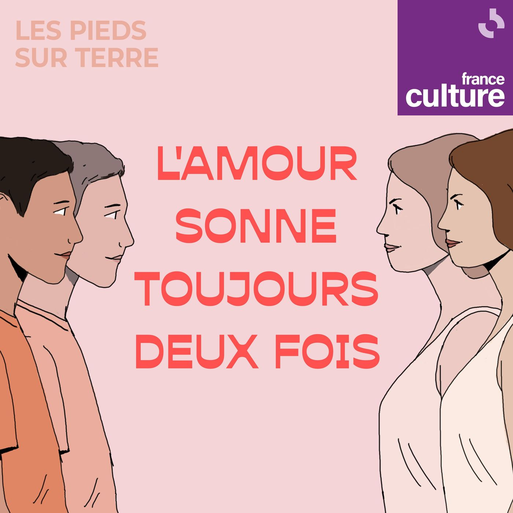
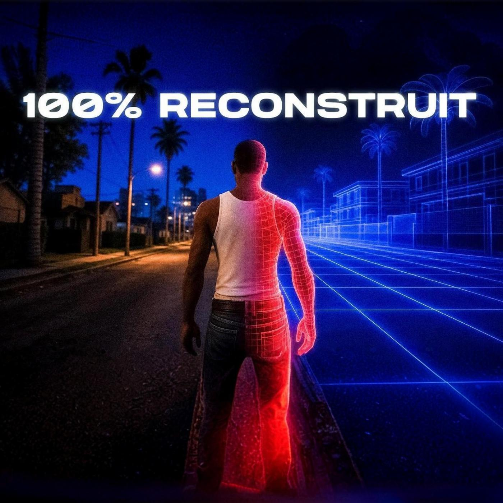
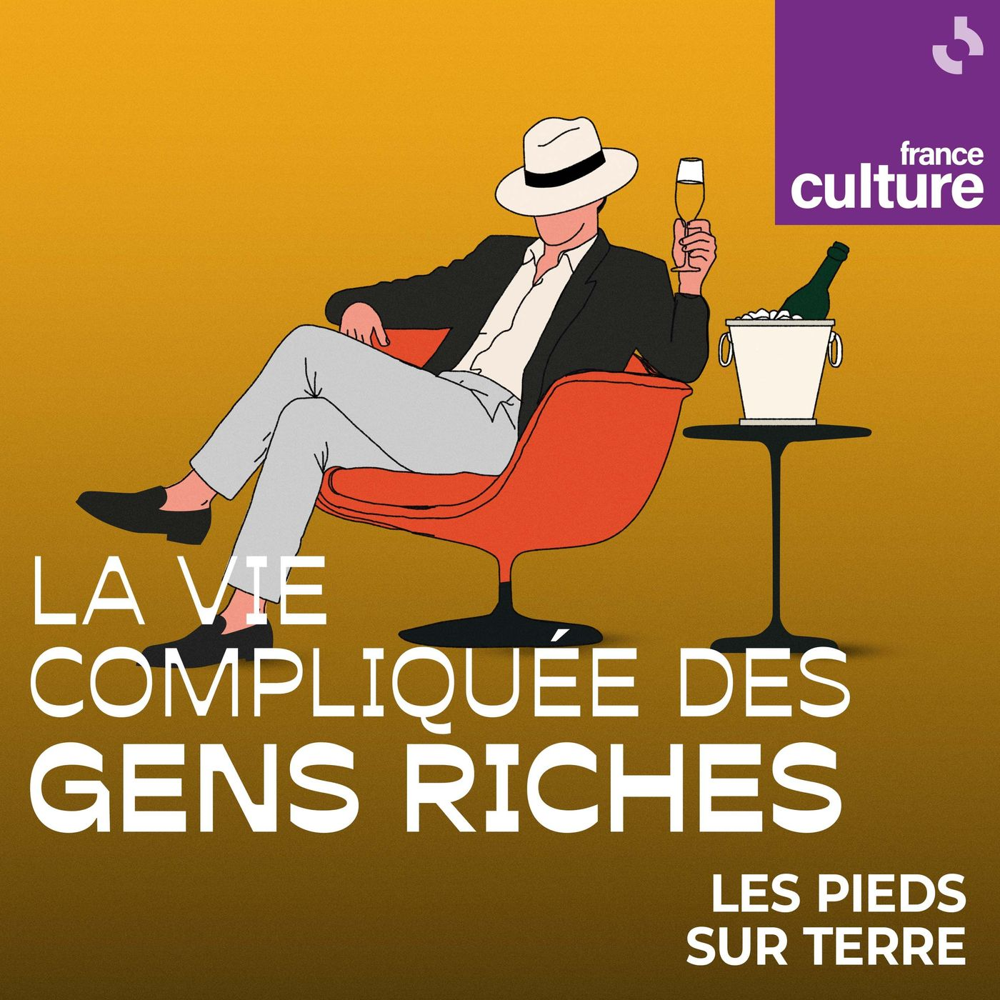
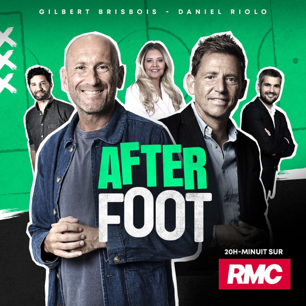
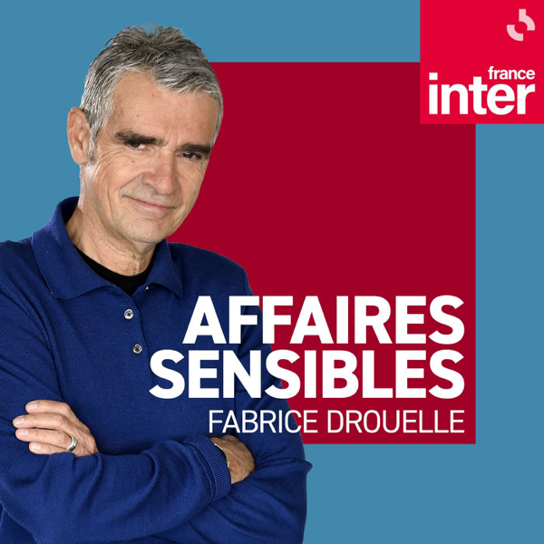
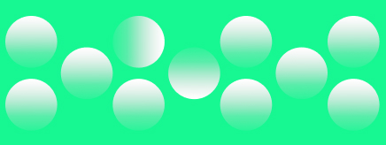
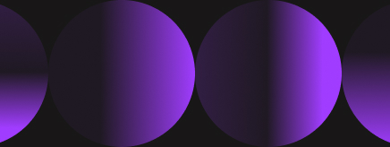

Nouveaux épisodes des podcasts abonnés

L'amour sonne toujours deux fois 2/5 : Alice et Louis
Les Pieds sur terre
L'amour sonne toujours deux fois 1/5 : Cristy et Jean-Paul
Les Pieds sur terre

Comment une armée d'IA a percé le code de GTA — Salim Trouvé
Underscore_

La vie compliquée des gens riches : Marlene, millionnaire en quête de justice
Les Pieds sur terre
Top Podcasts
1
LEGEND
Guillaume Pley
2
Les Grosses Têtes
RTL

3
L'After Foot
RMC

4
Affaires sensibles
France Inter
5
Hondelatte Raconte
Europe 1
6
Entrez dans l'Histoire
RTL
Parcourir par genre
Comédie
Société & Culture
Actualités
True Crime
Business

Éducation
Santé & Forme
Sports
Arts
Science

TV & Cinéma
Musique
Les Pieds sur terre
La vie compliquée des gens riches : Marlene, millionnaire en quête de justice
La vie compliquée des gens riches : Marlene, millionnaire en quête de justice
Les Pieds sur terre